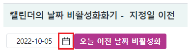
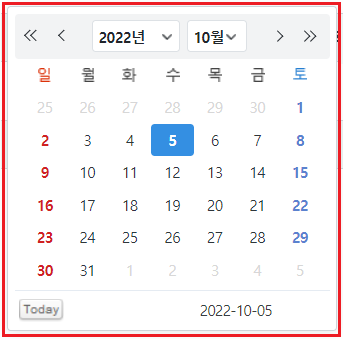
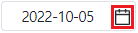
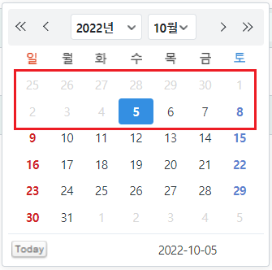
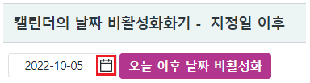
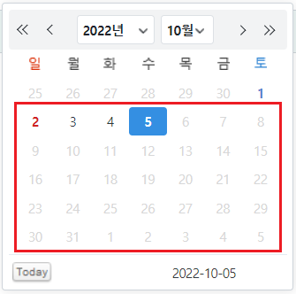
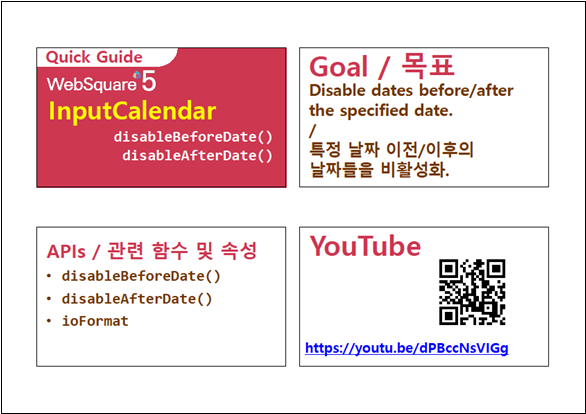

InputCalendar의 캘린더에 출력된 날짜를 비활성화하는 예제입니다. 지정한 날짜의 이후 또는 이전 날짜를 비활성화 할 수 있습니다. 비활성화 된 날짜는 사용자가 선택할 수 없습니다.
이 기능은 사용자가 입력하는 날짜, 기 입력(할당)된 날짜에 대해서는 제어하지 않습니다.
캘린더의 날짜 비활성화화기 - 지정일 이전
캘린더의 날짜 비활성화화기 - 지정일 이후
영역 [캘린더의 날짜 비활성화화기 - 지정일 이전]의 InputCalendar의 캘린더 아이콘을 클릭하여 캘린더에 출력된 날짜를 확인합니다.
초기 값은 예제 파일이 실행된 날짜가 출력됩니다
[브라우저(Chrome) 실행 예시 - 캘린더 아이콘]

[브라우저(Chrome) 실행 예시 - 캘린더]

STEP2. 버튼 오늘 이전 날짜 비활성화를 클릭합니다.
InputCalendar의 캘린더 아이콘을 클릭하여 캘린더에 출력된 날짜를 확인합니다.
오늘 이전의 날짜가 비활성화된 것을 확인합니다.
[브라우저(Chrome) 실행 예시 - 캘린더 아이콘]

[브라우저(Chrome) 실행 예시 - 캘린더]

영역 [캘린더의 날짜 비활성화화기 - 지정일 이후]의 InputCalendar의 캘린더 아이콘을 클릭하여 캘린더에 출력된 날짜를 확인합니다.
초기 값은 예제 파일이 실행된 날짜가 출력됩니다
[브라우저(Chrome) 실행 예시 - 캘린더 아이콘]

[브라우저(Chrome) 실행 예시 - 캘린더]
STEP2. 버튼 오늘 이후 날짜 비활성화를 클릭합니다.
InputCalendar의 캘린더 아이콘을 클릭하여 캘린더에 출력된 날짜를 확인합니다.
오늘 이후의 날짜가 비활성화된 것을 확인합니다.
[브라우저(Chrome) 실행 예시 - 캘린더 아이콘]
[브라우저(Chrome) 실행 예시 - 캘린더]

원하는 시점에 스크립트를 작성합니다.
[소스 코드 예시]
//예제 파일에서는 스크립트 scwin.btn_ex1_onclick에 작성되어 있습니다. //inputCalendar "ica_exam_2"에 지정일 이전 날짜 비활성화하기 ica_exam_2.disableBeforeDate("20221005"); //2022년 10월 5일 이전 날짜 비활성화
원하는 시점에 스크립트를 작성합니다.
[소스 코드 예시]
//예제 파일에서는 스크립트 scwin.btn_ex1_onclick에 작성되어 있습니다. //inputCalendar "ica_exam_3"에 지정일 이전 날짜 비활성화하기 ica_exam_3.disableAfterDate("20221005"); //2022년 10월 5일 이후 날짜 비활성화
캘린더에 비활성화된 날짜에 class를 재정의 할 수 있습니다. 비활성화된 날짜에 할당된 class명은 .w2calendar_date_disable 입니다.
[코드 예시]
/* inputCalendar의 캘린더의 비활성화된 날짜 class 재정의 */ .w2inputCalendar_calendar .w2calendar_date_disable {color:#d7d7d7; }
disableAfterDate( dateStr )
disableBeforeDate( dateStr )
ioFormat
inputReadOnly
[웹스퀘어5 SP5 개발 가이드] InputCalendar
링크 : https://docs1.inswave.com/sp5_user_guide/8df43d1f59fab704#579244ff7483b50c
[웹스퀘어5 SP5 개발 가이드] InputCalendar - disableBeforeDate() & disableAfterDate()
링크 : https://docs1.inswave.com/sp5_user_guide/8df43d1f59fab704#01b3bebedb8191bf
InputCalendar - disableBeforeDate() & disableAfterDate()
링크 : https://youtu.be/dPBccNsVIGg
